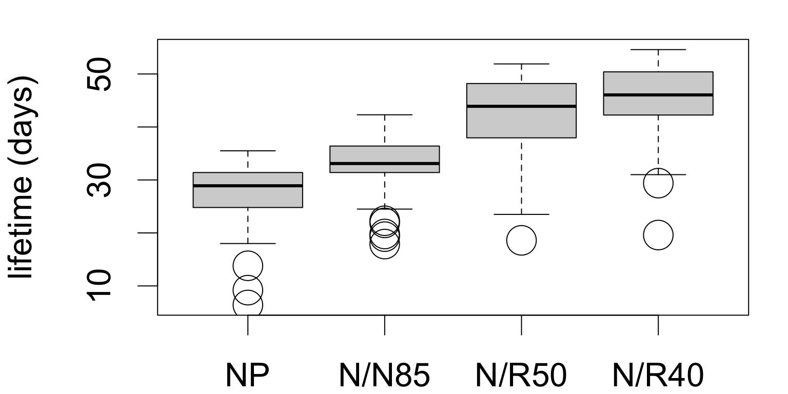

| Diet | mean | sd | n |
|---|---|---|---|
| NP | 27.4 | 6.134 | 49 |
| N/N85 | 32.69 | 5.125 | 57 |
| N/R50 | 42.3 | 7.768 | 71 |
| N/R40 | 45.12 | 6.703 | 60 |
Estimating group means, pairwise comparisons, and contrasts after ANOVA

Data are standardized lengths of the anterior adductor muscle (AAM) of Mytilus trossulus mussels from five populations.
Estimate mean AAM lengths for each population and test for differences between populations. If differences are determined to be significant, determine which populations differ significantly and provide interval estimates for the differences.
How much data should I collect to detect differing means with a target power level?
To perform sample size power calculations, one needs:
To detect means that differ among 5 groups with half of the error variability with 90% power: